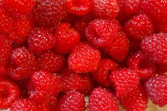
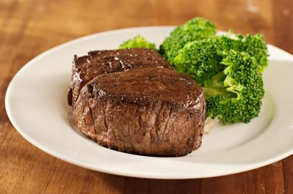
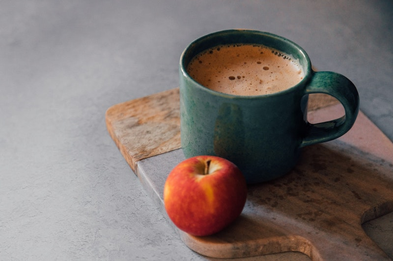

Facts on food
-
Dark chocolate has huge health benefits

Chocolate was first seen in bar form around 1910. Dark chocolate is made from the roasted beans of the cacao tree and has many health benefits. From improving bad cholesterol to lowering blood pressure, helping to reduce stress and improving vision, it’s definitely worth eating a square or two a day.
-
Raspberries are a member of the rose family
As are cherries, apricots, plums, pears, apples, quinces, peaches, strawberries, and blackberries. These types of fruits typically have flowers with five equal petals arranged around a central core. Unlike many other fruit snacks, once picked, unripe raspberries do not ripen.
-
Broccoli contains more protein than steak
Former President George W Bush may have once famously proclaimed: “I’m president of the United States and I’m not going to eat any more broccoli,” but don’t listen to him! Besides the usual nutrition one gets from eating their greens, broccoli has a great deal of protein. Calorie for calorie, there is more protein in broccoli than steak. And it doesn’t come with all those saturated and trans fats or cholesterol, so you can get all the protein you need with a significantly lower risk of cardiovascular disease with this healthy food.
-
Apples give you more energy than coffee
The coffee snobs may not don’t want to believe it, but it’s true. If you’re ever a little low on energy during the afternoon, then consider munching into an apple instead of buying a cup of coffee. Thanks to its high carbohydrate, fiber, vitamin C and mineral content, eating apples are the perfect (and healthy) option to help you stay energized all day.The world’s most hated vegetable is one of the best for you